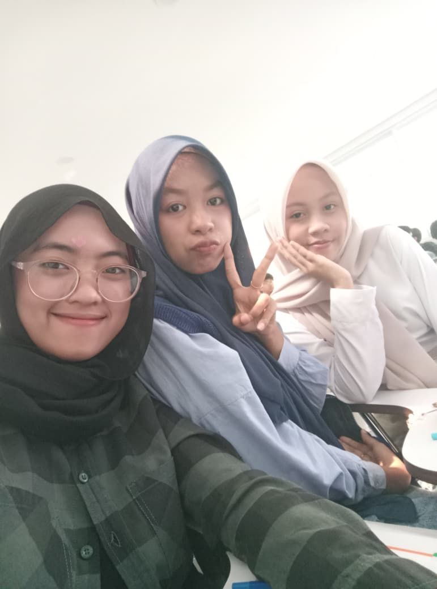
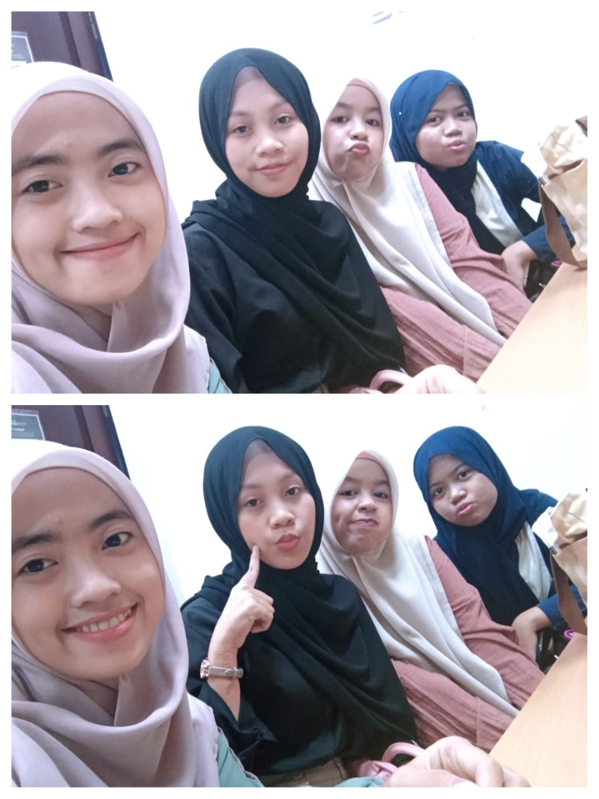
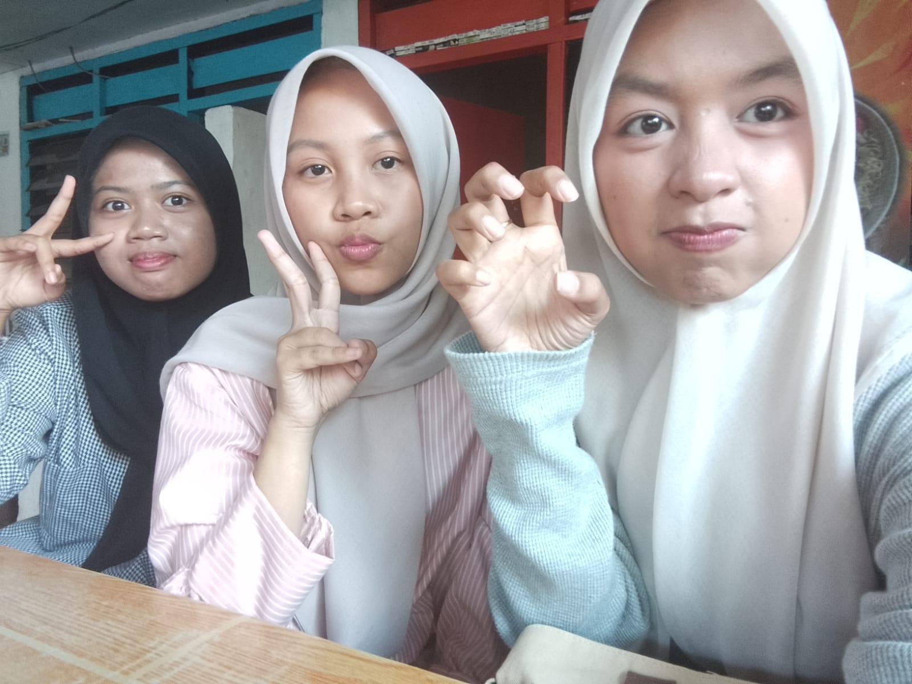
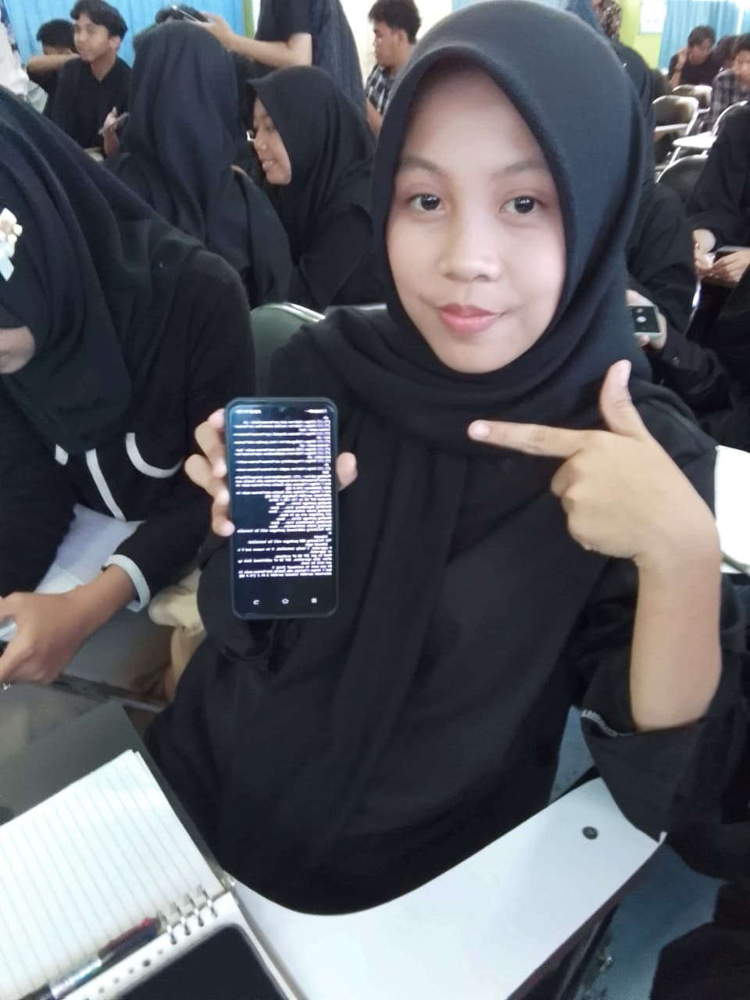

Saya Yulia Fitri, seorang mahasiswa semester 1 program studi Teknik Informatika yang memiliki semangat tinggi dalam mempelajari dunia teknologi. Ketertarikan saya pada bidang pengembangan web dan pemrograman mendorong saya untuk terus menggali ilmu dan memperluas wawasan, terutama dalam membangun fondasi yang kuat di era digital yang terus berkembang.
Saat ini, saya fokus mempelajari HTML, CSS, dan JavaScript sebagai langkah awal untuk menguasai pengembangan web. Dengan mempraktikkan langsung apa yang saya pelajari, saya berharap dapat menciptakan solusi digital yang fungsional, menarik, dan bermanfaat. Saya percaya bahwa keterampilan teknis yang saya bangun hari ini akan menjadi modal berharga untuk menghadapi tantangan teknologi di masa depan.




Unduh file-file berikut untuk informasi lebih lanjut.